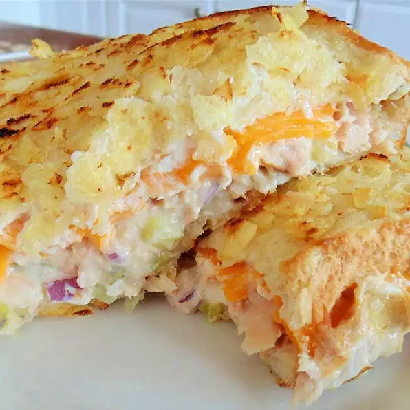

Tuna Melt

Description
This sandwich gets a crunchy finish with chips embedded into the bread. I use very special potato chips that were sent to me from Pennsylvania by my dear friend, MP. But if you can't find Utz®, your favorite chip will work just fine. Serve with more chips and pickles.
Ingredients
- 1 (5 ounce) can olive-oil packed tuna, undrained
- ¼ cup mayonnaise
- 1 teaspoon Dijon mustard
- 1 dill pickle, chopped
- 2 tablespoons minced red onion
- 4 slices rustic whole-grain bread
- 4 slices Irish Cheddar cheese
- tablespoons whipped cream cheese, divided
- 1 cup coarsely crushed potato chips (such as Utz®)
- 2 tablespoons mayonnaise, divided
Steps
- Mix tuna, 1/4 cup mayonnaise, and Dijon mustard together in a small bowl. Stir in pickle and red onion. Spread tuna mixture on 2 slices of bread. Top each with 2 slices of Cheddar cheese.
- Spread 1 tablespoon cream cheese on each of the remaining 2 slices of bread. Place on top of the Cheddar cheese.
- Place crushed chips in a shallow bowl. Spread top side of each tuna melt with 1 1/2 teaspoon mayonnaise and press into the chips. Repeat on other side.
- Place crushed chips in a shallow bowl. Spread top side of each tuna melt with 1 1/2 teaspoon mayonnaise and press into the chips. Repeat on other side.